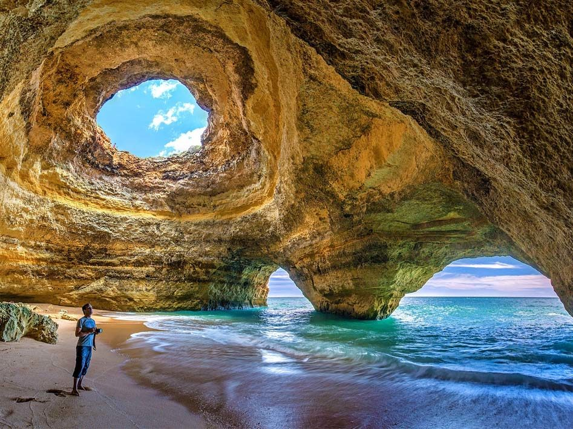
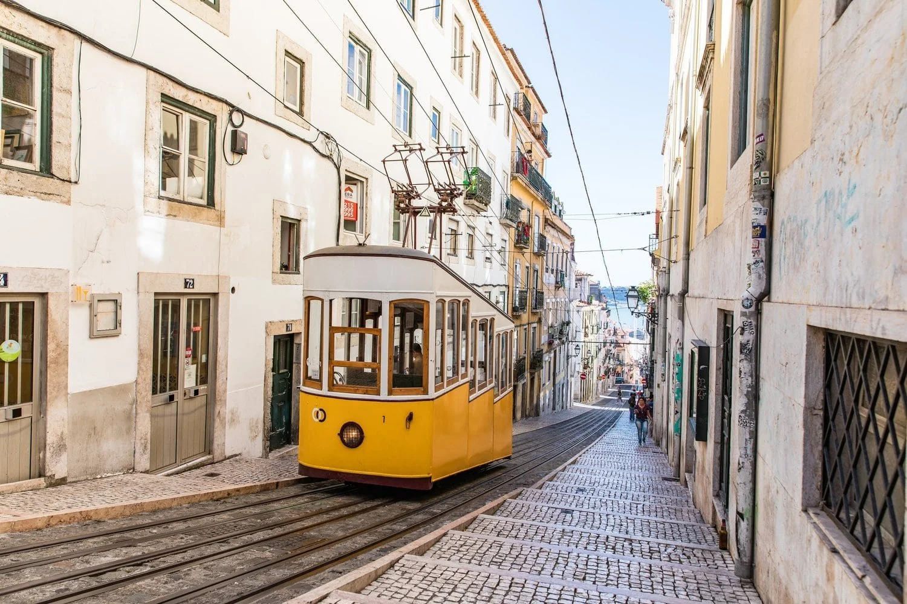

Discover Portugal: A Land of History, Coastal Beauty, and Fado Melodies
Portugal, located on the Iberian Peninsula, is a country of stunning landscapes and rich history. From the golden beaches of the Algarve to the rolling vineyards of the Douro Valley, Portugal offers natural beauty at every turn. Its cities, like Lisbon and Porto, charm visitors with colorful streets.
Portugal is also famous for its culture and traditions. The soulful music of Fado, the taste of freshly baked pastéis de nata, and lively festivals bring its heritage to life. With warm weather, friendly locals, and a relaxed pace of life, Portugal is a destination that combines history, nature, and vibrant culture in a unique and unforgettable way.
Culture and Traditions
Portugal has a rich culture shaped by centuries of history and exploration. Traditional music, especially Fado, reflects the country’s soulful and emotional side. Festivals like Festa de São João in Porto and Carnival in Madeira show the Portuguese love for celebration, dance, and colorful costumes.
Portuguese traditions also include food and drink, such as tasting pastéis de nata or enjoying fresh seafood with family. Handicrafts like azulejos (decorative tiles) and traditional folk dances keep local customs alive.
Places to Visit

Portugal is full of beautiful places to explore. In Lisbon, you can wander through the colorful streets of Alfama, visit the historic Belém Tower, and enjoy views from São Jorge Castle. Porto is famous for its riverside area, the Dom Luís I Bridge, and the cellars where Port wine is made.
The country also has stunning natural scenery. The Algarve region is known for its golden beaches and dramatic cliffs, while Sintra offers magical palaces and lush gardens. Don’t miss the Douro Valley, where rolling vineyards and scenic river views make it perfect for a relaxing trip.
Famous Places to Eat and Dine
Portugal is famous for its fresh seafood and traditional dishes. In Lisbon, you can enjoy a pastel de nata at local cafés or try grilled sardines at riverside restaurants. Porto is known for its francesinha sandwiches and tasty port wine, served in cozy bistros.
For a unique experience, visit the small towns and coastal villages where family-run taverns serve homemade stews and seafood caught that morning. From casual eateries to elegant restaurants, Portugal offers a variety of flavors that reflect its rich culture and history.
Transportation

Transportation in Portugal is modern, affordable, and easy to use. Cities like Lisbon and Porto have reliable public transport, including metro systems, buses, and trams that connect main areas and tourist spots. Trains are also a popular option for traveling between cities and regions.
For longer distances, Portugal has a good railway network and comfortable long-distance buses. Many people also use cars to explore smaller towns and coastal areas, as the roads are well maintained. Overall, getting around Portugal is convenient for both locals and visitors.
Travel Tips
Here’s a list of useful tips for traveling in Portugal:
Learn basic Portuguese phrases – Simple greetings and phrases make interactions easier.
Plan for lunch breaks – In smaller towns, shops may close briefly in the afternoon.
Carry some cash – Small cafés and local markets may prefer cash.
Respect local customs – For example, dress modestly when visiting churches.
Explore beyond the cities – Portugal has beautiful beaches, wine regions, and charming villages.
Famous Songs in Spain
Portuguese songs are celebrated for their soulful melodies and poetic lyrics.
They often blend deep emotion with rich musical traditions like fado and modern pop.
THE BEST OF GLOBETREK DELIVERED TO YOUR INBOX
Sign up for inspiring travel stories, guides, and cultural insights.